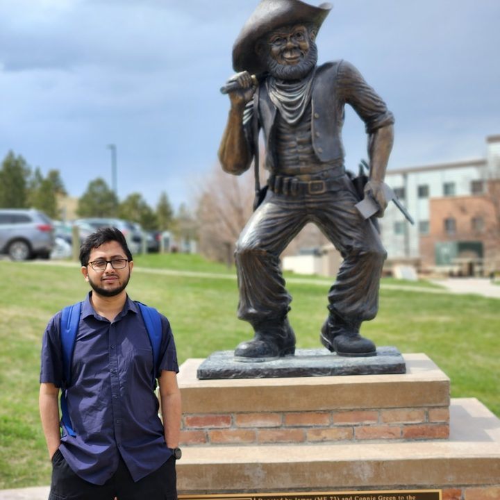

Plasmonic Nanostructures
Localised surface plasmon resonance in metallic nanoparticles, dimers, and coupled arrays. Geometry-driven control of hot-spot intensity and spectral position.
LSPRNear-field
PhD Researcher · Nano Science & Nanoengineering
I am a doctoral researcher in Nano Science and Nanoengineering at South Dakota Mines, studying how metallic nanostructures confine and shape optical fields — plasmonic resonances, near-field hot-spots, and metasurfaces — using full-wave FDTD simulation with Meep and Tidy3D.

Research focus
Light interacting with metal at the nanoscale produces field confinement far below the wavelength. That regime is where sensing, energy harvesting, and on-chip optics become possible — and where careful numerical modelling matters most.
Localised surface plasmon resonance in metallic nanoparticles, dimers, and coupled arrays. Geometry-driven control of hot-spot intensity and spectral position.
Sub-wavelength resonator arrays that shape phase, polarisation and amplitude — including Fano-type responses and high-Q modes for filtering and beam control.
Finite-difference time-domain modelling: convergence and resolution studies, PML behaviour, dispersive material fitting, and GPU-accelerated parameter sweeps.
Hybrid plasmonic and dielectric waveguides — mode confinement against propagation loss, and coupling into integrated photonic circuits.
Surrogate models and inverse design that shortcut expensive full-wave sweeps — connecting my machine-learning background directly to nanophotonics.
Refractive-index and SERS-oriented sensing, where field enhancement in a nanogap sets the detection limit.
Toolchain
I work primarily in the time domain, cross-checking geometry and material models between an open-source solver and a commercial cloud solver so results are not an artefact of one implementation.
Open-source FDTD. Full scripting control in Python for custom geometries, dispersive media, symmetry exploitation, and reproducible batch runs on HPC.
GPU-accelerated cloud FDTD. Large 3-D volumes and broad parameter sweeps resolved in minutes rather than days — practical for design-space exploration.
NumPy, SciPy, Matplotlib and Pandas for post-processing, spectral analysis and figure generation.
PyTorch, TensorFlow and Keras — applied to surrogate modelling and data-driven system identification.
Selected work

Field enhancement in the gap as a function of separation and particle diameter.

Separating scattering from absorption to locate the resonance and its linewidth.

Sharp Fano features from coupled bright and dark resonator modes.
Education
Ph.D. Nano Science & Nanoengineering — South Dakota Mines (2026–present)
M.S. Electrical Engineering — South Dakota Mines
M.S. Computer Science & Engineering — South Dakota Mines, 2024
B.Sc. Electrical & Electronic Engineering — CUET, 2013
Applied optics practice
Eight years designing and operating optical networks — fibre backbone architecture, PON/FTTH topology, ODN design and pathway analysis. Hands-on intuition for how light actually behaves in deployed systems.
Recognition
Ivanhoe Fellowship — top 5% of graduate students
President's Leadership Academy — year-long programme
My doctoral research is under way at South Dakota Mines, and I welcome collaboration on nanophotonic and plasmonic modelling problems. I am happy to share simulation scripts, convergence data, or discuss a group's current work.